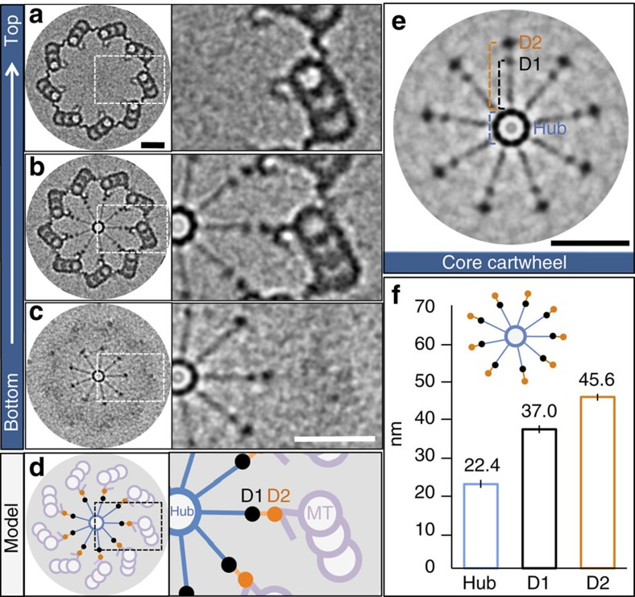

basal body D2-rod
A longitudinal subassembly at the periphery of a microbial ciliary basal-body or pro-basal-body cartwheel, linking the outer radial-spoke ends along the cartwheel axis. In characterized Chlamydomonas and Paramecium regions it is distinguishable from the pinhead and extends into the proximal cartwheel segment beyond the microtubule wall. [DOI:10.15252/embj.2020106246]

NCBITaxon:3055) · P. Guichard, V. Hamel, M. Le Guennec, N. Banterle, I. Iacovache, V. Nemčíková, I. Flückiger, K. N. Goldie, H. Stahlberg, D. Lévy, et al.; CC BY, via PubMed Central · CC_BY_4_0 · source: PMC PMC5376648.1 f1 · DOI:10.1038/ncomms14813Synonyms: centriole D2-rod; D2 density
Part of: cellstructuremech:basal_body_cartwheel GO:0036064 GO:0120280
Canonical examples
NCBITaxon:3055Chlamydomonas reinhardtii — Ninefold-symmetrized cryo-ET of isolated CW-15 pro-basal bodies resolves peripheral D2 densities in the core cartwheel. Figure 1 includes a proximal segment lacking pinhead and microtubules. This is native isolated material, distinct from the paper's recombinant arrays. [DOI:10.1038/ncomms14813]NCBITaxon:5888Paramecium tetraurelia — Cryo-ET and symmetrized cartwheel views resolve longitudinal D2 connections in Figure EV3 and Figure 3. Methods describe cortical units isolated from d4-2 and Delta-CenBP1; these figures are not assigned to one strain. No Chlamydomonas numerical measurement is transferred here. [DOI:10.15252/embj.2020106246]
Functions
- ciliary basal body organization
GO:0032053— Connects peripheral radial-spoke ends along the cartwheel axis in the characterized Chlamydomonas and Paramecium proximal regions. This observed arrangement does not establish a stiffness, a growth mechanism, or D2-specific essentiality.DOI:10.15252/embj.2020106246The proximal-extension Results name the vertical D2 connections as D2-rod. Figure EV3 distinguishes the D2-rod from the pinhead, including in the protruding cartwheel segment; Figure 3 resolves D1-to-D2 radial connections.
Physical properties
- OTHER: 45.6 +/- 0.8
UO:0000018(Radial distance from the hub margin to the D2 density in isolated Chlamydomonas reinhardtii CW-15 pro-basal bodies, Guichard et al. 2017 Figure 1f; reported value and error, n=13 measurements from five tomograms. The caption does not specify the error statistic. Methods selected spokes ending in visible D1 and/or D2 densities for these distance measurements. This is a position relative to the hub edge, not the hub center, rod length, diameter, axial repeat or molecule count.) [DOI:10.1038/ncomms14813]
Discussions
- CURATION_TODO (RESOLVED): Distinguish the D2-rod from the cartwheel and its neighboring densities. A named peripheral subassembly is not the entire cartwheel or a single asserted protein.
- CURATION_TODO (OPEN): Identify the native microbial D2-rod constituents and a narrower molecular class. Morphology and coassembly do not assign a complete native proteome to a resolved density.
- CURATION_TODO (RESOLVED): Keep core-cartwheel reconstitution and human localization models separate from microbial D2 composition. Membership in a broader assembly or a proposed counterpart is not a native D2-specific assignment.
- CURATION_TODO (RESOLVED): Keep radial position, axial organization and assembly models distinct. Processing symmetry and adjacent structural repeats do not supply a molecular count or D2 growth rate.
- CURATION_TODO (RESOLVED): Do not substitute neighboring maps for a D2-rod-specific deposit. Sharing an article does not establish structural equivalence or sufficient map coverage.
Evidence
DOI:10.15252/embj.2020106246Klena et al. 2020, PMID:32954513. Checksum-verified PMC7667884.1 Results, species preparation, cartwheel averaging Methods, Figure EV3 and Data availability inspected. The original mixed-species EV3 figure was visually inspected but is not hosted here. Chlamydomonas in-situ mat3-4 mature and pro-basal-body views distinguish D2-rod from pinhead and microtubule wall.DOI:10.1038/ncomms14813Guichard et al. 2017, PMID:28332496. Checksum-verified PMC5376648.1 native and reconstitution Results, Discussion, isolation, cryo-ET and measurement Methods, Figure 1 and Data availability inspected. The original Figure 1 was visually inspected. Native D2 morphology is distinguished from recombinant core-cartwheel sufficiency.
Curation history
2026-10-04T15:11:34Zcodex · CREATED_RECORD — Scaffolded by scripts/new_record.py2026-10-04T15:13:44Zcodex · CURATED_RECORD — Added D2-rod cartwheel parthood, native Chlamydomonas and Paramecium evidence, scoped radial-position measurement and inspected CC BY figure. Distinguished D1, pinhead, reconstituted arrays and proposed human CPAP localization from native microbial D2 composition; retained molecular and dataset boundaries without unsupported components or causal claims.